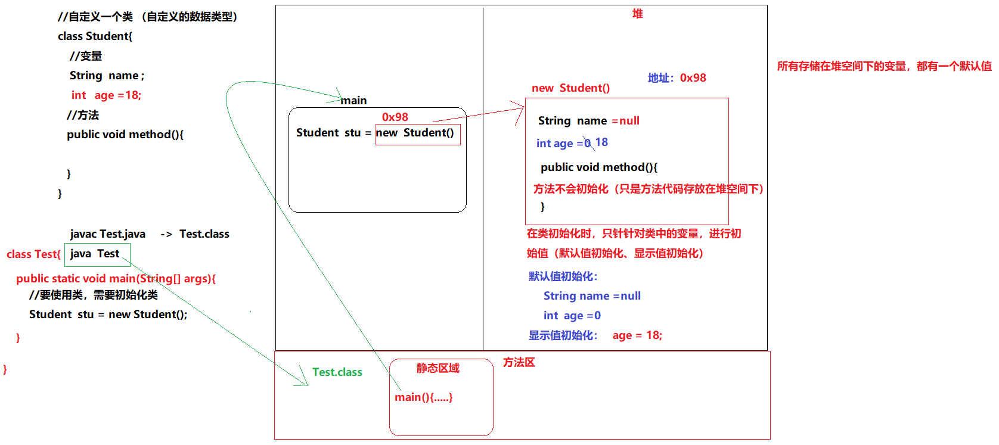
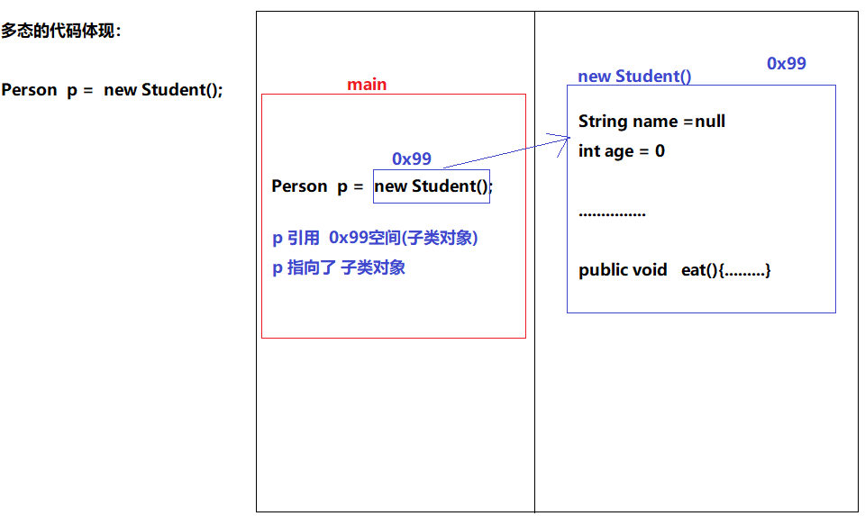

JavaSE_Day08¶
面向对象知识点梳理¶
类¶
在java语言中，是使用类进行编写java程序
class 类名{ //书写java代码 }
在类中可以书写的内容有哪些？
变量
方法
在java语言中，类除了是用来定义所书写的程序外，类的另一个作用：自定义类型
对象¶
当书写完自定义类后，需要对类进行初始化（数据类型 变量=初始化）
怎么对类进行初始化（初始化的动作，底层：开辟堆内存空间）
类名 对象名 = new 类名(); 类名 ： 数据类型 对象名 ： 变量名 new ： 告知JVM要开辟堆空间 类名() ： 告知JVM要开辟空间的大小 （ 类中所书写的所有内容[变量]，进行换算，然后开辟空间 ） 自动调用构造方法
小结 ： 类在程序中可以干什么？
java的书写的程序内容都是类为单位
类中书写的内容：变量、方法
java中的类： 数据类型 （JVM基于这个数据类型，开辟堆空间）
java语言提供的
程序员自己定义的（自定义类）
类中书写的内容，想要使用，怎么办?
需要对类进行初始化（JVM在堆中开辟一个空间）
初始化代码： 类名 对象名 = new 类名()
封装¶
在java语言中，在类中书写程序代码（变量、方法）
把变量、方法封装到类中
在java语言中，封装的两种代码体现：
方法 ， 封装的是一段代码块（所封装的代码块通常是用来解决一个问题的【功能】）
类 ， 封装的是变量和方法
变量，成员变量（实例变量）
为什么叫成员？
类需要创建对象，而通过“对象.变量”的方式去访问，称为：成员变量
方法，成员方法
// 类
class Student{
int age;
}
//在使用Student -> age变量
Student stu = new Student();
stu.age = -10; //赋值为非法数据（影响了程序安全性）
//以上给age赋的值为非法数据
解决方案1：
定义一个变量，接收 -10
判断变量是否合法，合法：再赋值给stu.age
int a = -10;
if( a >= 0 ){
stu.age = a;
}
解决方案2： 在Studetn类中
第1步：不让外部直接使用age变量 （使用java中的关键字：private ）
第2步：让外部间接把值给到一个方法，在方法中判断值是否合法
合法： 把合法值， 赋值给 age变量
java语言为了保证程序的安全性，提供了一些访问权限： 让程序中的代码使用添加了权限
public
private
class Student{
private int age;// 私有的变量（只能在Student类中使用age）
public void setAge(int age){
// age = age;//局部变量 = 局部变量
//就近原则：方法中的局部变量会优先使用
//在java中，区分局部变量和成员变量，使用：this关键字
if(age>=0){
this.age = age;
}else{
// 异常
// 日志
}
}
public int getAge(){
return this.age;
}
}
Student stu = new Student();
stu.age = -10; //不能赋值（编译：报错）
//赋值合法数据：
stu.age = 10;// 编译：报错
stu.setAge(10);
stu.setAge(-10);//传递的是一个非法数据
System.out.println("年龄："+ stu.getAge() );
问题：想要给类中书写变量，进行赋值操作，怎么实现？
class Student{
private String name;
private int age;
//新增变量
private String gender;
private String phone;
private String stuId;
private double height;
.....
public void setName(String name){
this.name = name;
}
。。。。
}
//对类进行初始化
Student stu = new Student();
stu.setName("测试");
stu.setAge(10);
//当类中书写的成员变量过多时，需要使用大量的setXxx()方法，给类中的变量赋值
另一个斛决方案： java中的构造方法
构造方法¶
什么是构造方法？
1、和类名相同
2、没有返回值类型（不需要书写void关键字）
class Student{
private String name;
private int age;
private String gender;
private String phone;
//构造方法
public Student(){ //空参构造方法
}
public Student(String name,int age,...){
//考虑到非法数据问题
if( age >= 0 ) {
this.age = age;
}else{
}
this.name=name;
...
//开发中有不少这样写：
this.setAge(age);
this.setPhone(phone);
}
//给私有的age变量赋值
public void setAge(int age){
if(age>=0){
this.age = age;
}else{
// 异常
// 日志
}
}
}
构造方法对于书写程序的作用： 可以对类中的私有成员变量进行赋值
1、当类中有私有成员时，对类中的私有成员进行赋值操作：setXxx()
2、当类中有私有成员时，使用类的有参构造方法，对类中的私有成员进行赋值操作
私有成员变量，只有在本类中使用（构造方法也属于本类）
小结：
针对类中的私有成员变量，有两种赋值方式：
1、public void setXxx(数据类型 参数)
2、类中的有参构造方法
注意：构造方法不是由书写的程序调用的，而是由JVM自动调用
什么时候调用构造方法？
在对类进行初始化操作时： 类名 对象名 = new 类名(); //在执行当前行代码时，自动调用构造方法
类：自定义类型（数据类型）
对象：对类进行初始化。 只有类初始化后，才可以访问类中的成员变量、成员方法
当变量、方法书写在类中时，就相当于把变量和方法进行了封装
为了程序中数据的安全性考虑，建议：把成员变量私有化
私有化的成员变量带来一个问题：外部程序无法访问
解决方案1： 提供相应的getter（获取私有成员变量的值）、setter（对私有成员变量赋值）
解决方案2： 使用类中的有参构造方法 （对私有成员变量赋值）
继承¶
学生管理系统： 学生、老师
类：老师类
类：学生类
//学生类
class Student(){
private String name;
private int stuId;
private int age;
....
public void study(){
...
}
}
//老师类
class Teacher{
private String name;
private int teaId;
private int age;
....
public void teach(){
...
}
}
通过观察，Teacher类和Student类，中有不少相同的代码。
需求1：在Teacher类和Studetn类中，新增属性：教室
//学生类
class Student(){
private String name;
private int stuId;
private int age;
//新增
private String classRoom;
....
public void study(){
...
}
}
//老师类
class Teacher{
private String name;
private int teaId;
private int age;
//新增
private String classRoom;
....
public void teach(){
...
}
}
需求2：系统升级了， 原的学生学号和老师学号，int类型存储不下了，需要扩展类型： long 或 String
再对Student类和Teacher类进行改造
通过刚才两个需求，发现：每次都要修改多个类中的代码（程序的修改过多）
有没有简单一些方案呢？
答： 继承
要实现继承需要什么?
1、要定义一个父类
2、要定义一个子类，子类要继承父类
继承的关键字： extends
//定义一个父类
class Person{
private String name;
private int teaId;
private int age;
...
}
//定义一个子类
class Student extends Person{
public void study(){
...
}
}
//定义一个子类
class Teacher extends Person{
public void teach(){
...
}
}
继承的特点：
1、子类在继承父类后，可以直接使用父类中的非私有成员方法、成员变量
需求1：在Teacher类和Studetn类中，新增属性：教室
解决方案：只需要在Person类中，添加：教室 （只修改一处代码）
class Person{
private String name;
private int teaId;
private int age;
...
//新增
private String classRoom;
}
需求2：系统升级了， 原的学生学号和老师学号，int类型存储不下了，需要扩展类型： long 或 String
解决方案：只需要修改Person类中的代码。 int ->< long （只修改一个类中的代码）
class Person{
private String name;
private long teaId;
private int age;
...
//新增
private String classRoom;
}
继承的特点： 1、子类在继承父类后，可以直接使用父类中的非私有成员方法、成员变量
2、子类只能继承一个父类（单一继承）
3、子类继承一个父类，父类再继承一个爷爷类，爷爷类再继承… (多层次继承 )
子类除了可以使用父类中的非私有成员外，还可以使用爷爷类中的非私有成员
继承的好处：提供程序中代码的复用性
继承中构造方法的原理：
子类在初始化对象时，为了确保子类可以正常访问父类中的成员，需要先对父类进行初始化
子类的构造方法中，会先调用父类的构造方法
示例：
class Person{
public Person(){
}
}
class Student extends Person{
public Student(){
//第一行代码： super() //调用父类中的空参构造方法 （JVM自动添加）
}
}
【注意】：当父类中的没有空参构造方法时，子类的构造方法中必须书写：super(参数)
this和super¶
this ： 代表当前对象
super： 代表父类对象
使用方式：
//成员变量
this.name;//访问本类中的成员变量
super.name;//访问父类中的成员方法
//成员方法
this.method();//访问本类中的成员方法
super.method();//访问父类中的成员方法
//构造方法
this(); this(参数); //访问本类中的构造方法
super(); super(参数); //访问父类中的构造方法
多态¶
//父类
abstract class Person{
private String name;
private int age;
....
//通常父类中的方法无法明确具体的功能代码时，只需要针对方法进行声明（只定义没有方法体）
//抽象方法： 只定义没有方法体
public abstract void eat();
}
class Student extends Person{
//子类在继承了抽象类后，必须重写抽象方法（java语法规定）
public void eat(){
System.out.println("去校区食堂吃饭...");
}
}
class Teacher extends Person{
//子类在继承了抽象类后，必须重写抽象方法（java语法规定）
public void eat(){
System.out.println("去校外吃饭...");
}
}
class Test{
public static void main(String[] args){
//创建学生对象
Student stu = new Student();
method1( stu , "zs" , 20 , .....)
//创建老师对象
Teacher tea = new Teacher();
method2( tea ,"ls" ,33 , ...... )
}
//大在书写程序时：当发现有重复的代码，建议都进行抽取封装：方法、类 （复用性）
public static void method1( Student stu, String name , int age , ... ){
stu.setName( name );//因为Student继承了Person，可以使用父类中的非私有成员
stu.setAge( age );
....
stu.eat();
}
public static void metho2 ( Teacher tea , String name , int age , ... ){
tea.setName( name );
tea.setAge( age );
....
tea.eat();
}
//添加就业班
//观察以上两个方法中的代码：除了对象名不同，其它都一样 (99%都是重复代码)
针对代码，再次精进：
public void method( ? , String name , int age , ...){
?.setName( name );
?.setAge( age );
....
?.eat();
}
? 有两个类型： Student 、 Teacher
Student类型和Teacher类型有什么相同？
继承的父类是同一个
java语言提供了一种方案：多态
多态的使用:
1、要有继承关系
2、子类要重写父类中的方法
3、 父类的引用指向子类对象
父类 父引用 = new 子类();
Person p1 = new Student();
p1.setName(...)
p1.eat()//调用的是对象中的eat方法
Person p2 = new Teacher();
p2.setName(....)
p2.eat();
public static void method( Person p , String name , int age , ... ){
p.setName( name );
p.setAge( age );
....
p.eat();
}
Student stu = new Student();
Person p = stu ; //多态
method( stu ,"ls" , 20 ,....);
Teacher tea = new Teacher();
method( tea );
}

//父类
abstract class Person{
private String name;
private int age;
....
//通常父类中的方法无法明确具体的功能代码时，只需要针对方法进行声明（只定义没有方法体）
//抽象方法： 只定义没有方法体
public abstract void eat();
}
class Student extends Person{
//子类在继承了抽象类后，必须重写抽象方法（java语法规定）
public void eat(){
System.out.println("去校区食堂吃饭...");
}
}
class Teacher extends Person{
//子类在继承了抽象类后，必须重写抽象方法（java语法规定）
public void eat(){
System.out.println("去校外吃饭...");
}
}
//需求升学：老师需要划分为基础班老师、就业班老师
//父类
abstract class Person{
private String name;
private int age;
....
//通常父类中的方法无法明确具体的功能代码时，只需要针对方法进行声明（只定义没有方法体）
//抽象方法： 只定义没有方法体
public abstract void eat();
}
class Student extends Person{
//子类在继承了抽象类后，必须重写抽象方法（java语法规定）
public void eat(){
System.out.println("去校区食堂吃饭...");
}
}
//基础班老师
class BasicTeacher extends Person{
//子类在继承了抽象类后，必须重写抽象方法（java语法规定）
public void eat(){
System.out.println("吃外卖...");
}
}
//就业班老师
class WorkTeacher extends Person{
//子类在继承了抽象类后，必须重写抽象方法（java语法规定）
public void eat(){
System.out.println("去校外吃饭...");
}
}
class Test{
public static void main(String[] args){
//创建学生对象
Student stu = new Student();
//创建基础老师对象
BasicTeacher tea = new BasicTeacher();
//创建就业班老师对象
WorkTeacher tea2 = new WorkTeacher();
method( stu , "zs" , 20 )
method( tea , "ls" , 33 )
method( tea2 , "ja" 30 )
}
public static void method( Person p , String name, int age ){
p.setName( name )
p.setAge(age)
...
p.eat();
}
}
在使用多态时，存在 一个问题：父引用无法使用子类中特有的成员
解决方案： 使用向下转型 （强制类型转换）
格式：子类 子类对象 = (子类) 父引用
当在进行强制类型转换时，如果父引用指向的对象类型 和 要转换的类型不匹配，就会发生：错误
父引用指向的对象类型 ： Person p = new Student(); //类型：Student
要转换的类型： Teacher
错误代码： Teacher tea = (Teacher ) p;//类型转换错误
通常在进行向下转型时，会先进行判断：
if( p instanceo Teacher){
Teacher tea = (Teacher ) p;
}
父引用 instanceof 子类类型 ： 判断父引用指向的对象类型 是否为 子类类型
抽象类
为什么有抽象类？
当程序中书写的方法只有声明，没有方法体代码实现，该需要修饰为：abstract
抽象方法必须存在于抽象类中
abstract class Person{ //抽象方法 public abstract void eat(); }
抽象类的特点：
不能实例化（ 不能创建对象。 只能通过子类来创建对象[多态的方式] ）
抽象类和普通类，除了不能实例化、多了一个抽象方法外，其他和普通类都一样
抽象类中可以书写的内容：抽象方法、构造方法、成员变量、成员方法
抽象类中的构造方法的作用：为了保证子类对象创建成功
抽象类通常都是父类
抽象类中的抽象方法，子类必须重写
接口¶
接口比类好的地方：可以多实现
接口在java中怎么使用：
1、定义一个接口
2、定义一个子类，子类实现接口，子类中并重写接口中的抽象方法
3、接口要创建对象，只使用多态的形式： 接口 父引用 = new 子类()
//定义接口
interface InterA{
//接口中可书写内容是固定的
常量、抽象方法、静态方法、默认方法
public static final int NUM=10;//常量
public abstract void method();//抽象方法
public static void method2(){
}
public default void method3{
}
}
//定义实现接口的类
class MyInter implements InterA{
//重写抽象方法
}
//使用接口：
InterA inter = new MyInter();
abstract classs Person{
String name;
int age ;
abstract void eat();
}
class BasicStudent extends Person{
public void study(){
}
}
class WorkStudent extends Person implements InterA{
public void study(){
}
//特有的功能
public void mianshi(){
}
}
class BasicTeacher extends Person{
public void teach(){
}
}
class WorkerTeacher extends Person implements InterA{
public void teach(){
}
//特有的功能
public void mianshi(){
}
}
interface InterA{
public void mianshi();
}
需求：学生都有学习方法、老师都讲课方法
就业班学生、就业班老师都具有：面试能力
BasicStudent bs = new BasicStudent();
WorkTeacher tea = new WorkTeacher();
接口：
1、当有部分类中的功能是相同时，可以把这部分相同的功能，抽取出来，封装到：接口
要执行就业班老师和就业班学生的：面试功能
WorkTeacher tea = new WorkTeacher();
WorkStudenet stu = new WorkStudent();
tea.mianshi();
stu.mianshi();
method( tea );
method( stu )
public void method( InterA inter ){
inter.mianshi()
}
在企业开发中，大量使用接口。
为什么？
通常在开发前期，会针对开发中的功能进行制定（需求分析）
前期：制定功能（没有功能代码）
使用抽象方法
问题：抽象方法是定义哪里？ 抽象类 or 接口？
答案： 接口 （接口可以多实现）
程序开发：接口
public interface 接口A｛
//功能1：
public boolean login(String name,Strng passwd);
//功能2：
public boolean changePasswd(String name , String oldPasswd);
}
public interface 接口B｛
…..
｝
进入到开发阶段：
//程序员01号
class UserImpl implements IUser｛
//重写抽象方法
具体方法中的功能代码
｝
class OrderImpl implements IOrder{
}
class ManagerImpl implements IManager{
}
=======================================================
//程序员02号
class 类{
public void method(){
//让用户先登录
IUser user = new UserImpl();//多态 接口
user.login("","")
}
}
面向对象¶
包¶
在学习java基础时，使用过Scanner。 要使用Scanner需要导入：import java.util.Scanner
包是什么？
文件夹
可以帮我们管理文件
包能做什么？
在开发中，程序员会书写很多的类，这些类有一些可能会出现重名
在开发中，所开发的项目中，会包含不同功能模块：商品、订单、用户、….
针对不同的功能模块，书写不同的java程序
包的作用：可以帮我们管理.java文件
避免重名
实现不同功能的类，可以存放在不同的功能模块下
怎么使用包？
创建包：package
把不现的.java文件存放在不同的包下
导入包：import
当需要使用别人开发好的功能时，需要先找到功能所属的类，然后使用import导入这个类
创建类对象，使用对象.功能()
package使用注意事项：
1、package必须书写在java程序的首行
2、一个.java文件夹中，只能书写 一个package
package com.itheima; //只能有一个package
//package com.itcast;//报错
class Itcast{
}
包的命名规则：
1、全部小写字母
2、包名通常使用域名，倒着写的方式（企业中的标准）
3、通常创建包名，都是有多个包，包之间使用.连接
package com.itheima.hw.demo1;
在书写程序时，需要引用别人写好的类中功能，需要：导包
package com.itheima;// Test类归属的包
import java.util.Scanner;//导包
class Test{
Scanner sc = new Scanner(System.in);///要使用别人写的功能，要导入
}
在书写 程序时，有两种导入包的方式：
第一种：(不推荐)
java.util.Scanner sc = new java.util.Scanner(System.in);//书写类名时直接把包导入
java.util.Scanner sc2 = new java.util.Scanner(System.in);
java.util.Scanner sc3 = new java.util.Scanner(System.in);
第二种：
import java.util.Scanner;
Scanner sc = new Scanner(System.in);
Scanner sc2 = new Scanner(System.in);
Scanner sc3 = new Scanner(System.in);
访问修饰符¶
在java中为了程序的安全性，java语言提供了4种用来访问成员的权限
1、public
public class Student{ //公开的 public void study(){ } }
2、private
public class Student{ private String name;//私有的。只能本类使用 }
3、默认 什么都不书写
public class Student{ String name;//默认的访问修饰符 }
4、protected
pubilc class Student extends Person{ protected String name;//受保护的（子类专用） }
访问修饰符号的访问范围
| 修饰符号 (从小到大排列) | 本类 | 同一个包下的类(非子类) | 同一个包下的子类 | 不同包下的类（非子类） | 不同包下的子类 |
|---|---|---|---|---|---|
| private | YES | NO | NO | NO | NO |
| 默认 | YES | YES | YES | NO | NO |
| protected | YES | NO | YES | NO | YES |
| public | YES | YES | YES | YES | YES |
常用API¶
Object类¶
Object类的基本认知：
1、java.lang.Object
2、Obejct类是java语言中的鼻祖类（最顶层的父类）
3、java中程序中所书写的类以及所使用的类，都要继承Object
//父类 class Father{//书写时没有书写继承 JVM自动会添加：class Father extends Object } //子类 class Child extends Father{ }
可以使用Object类中的成员方法(功能)
Object类中的成员方法 ：
String toString()
功能：返回字符串格式的对象
boolean equals(Object obj)
Student stu = new Student(); equals( stu ) // Object obj = stu;
功能：比较两个对象是否相等
String类¶
之前一直在使用：
class Student{
private String name;
}
String到底是什么 东西？ 它是一种数据类型呢？还是一个类呢？
String是一个类。不属于java的基本数据类型，属于引用类型
在java语言中，只要书写了"....",默认就是一个字符串对象：String类的对象
简单理解：在java中只要被英文的双引号包含的内容，默认就是一个String对象
String类的特点：
1、被英文双引号包含的内容，都是一个String类的实例
2、String中存储的字符串，不能被修改（不能对原值进行修改）
String类中的常用方法 ：
boolean equals(Object obj) : String类重写了Object类中equals方法。
String类中的equals方法 ，功能： 比较两个字符串的内容是否相等，区分大小字母
在java语言中：
比较字符串的地址，使用 ： ==
比较字符串内容，使用： equals() 方法
boolean equalsIgnoreCase(String str) ： 比较两个字符串是否相等，忽略大小写